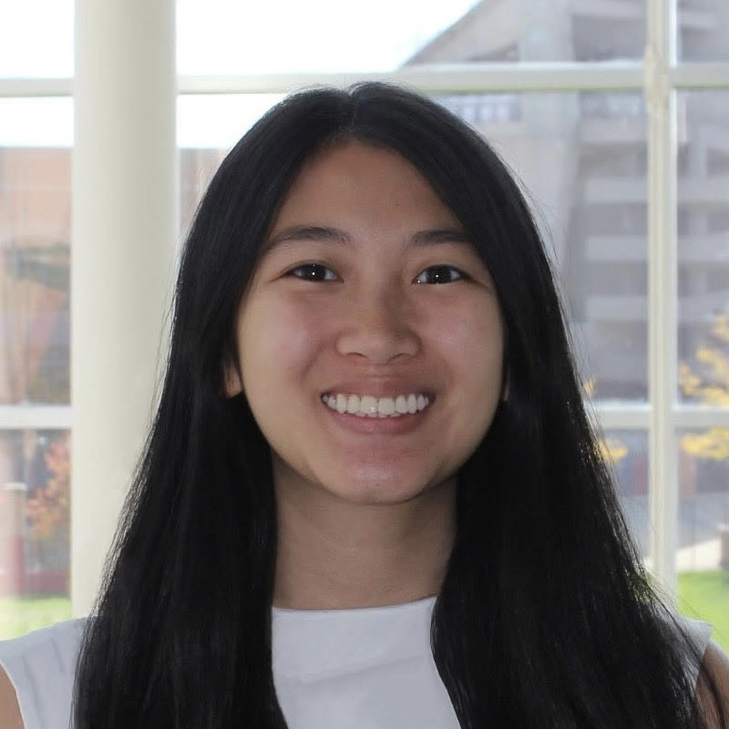

Hello, I'm Anna Huang
I'm passionate about technology and hardware engineering, with a strong focus on digital systems, FPGA design, and RTL development.
My Projects
000000
Binary Clock (sec)
—
~CPU cycles / sec
5
Languages
10+
Projects Built